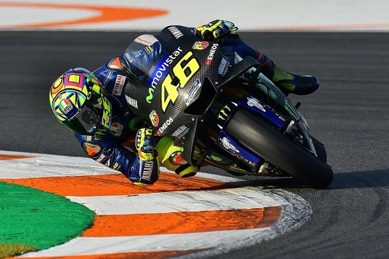

MotoGP
While I don't consume any of major league sports I am a huge follower of MotoGP! I don't just watch on Sundays though, I watch the entire racing weekend. From how the riders are feeling on FP1 to the final interviews on race day. Who is my favorite rider you ask? Well of course that is the one - the only - number 46 - Valentino Rossi!
Other MGP Riders
- Jorge Lorenzo
- Marc Marquez
- Danilo Petrucci
Bodybuilding
I'm not sure when my infatuation with bodybuilding began but I've been into it for as long as I can remember now. Maybe its the fact that I'm not the tallest or most muscular guy around but I'm just fascinated with what a human can do with and to their bodies with the level of dedication that professional bodybuilders do. Who is my favorite bodybuilder? That question is a bit harder to answer than who is my favorite MotoGP rider of all time because when it comes to bodybuilding there is so much to compare but I think that overall its the Austrian Oak - Arnold Schwarzenegger.

Other BodyBuilders
- Jay Cutler
- Kai Greene
- Phil Heath